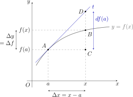

Hoofdstuk 19Differentialen
Leerplandoelstellingen (GO! Navigator)
Basisvorming (BV3_06)
-
• BV3_06.03 (MD 06.03) De leerlingen interpreteren de afgeleide als limiet van een differentiequotiënt en als richtingscoëfficiënt van de raaklijn aan de grafiek.
Gevorderde wiskunde (WD3_06.08)
-
• WD3_06.08.28 De leerlingen berekenen de afgeleide functie van functies die zijn opgebouwd uit veeltermfuncties, rationale functies, irrationale functies, exponentiële functies, logaritmische functies, goniometrische functies en cyclometrische functies.
-
– afbakening: afleidbaarheid
-
– afbakening: rekenregels: afgeleide van een som, product, quotiënt van functies en afgeleide van een samengestelde functie (kettingregel)
-
– afbakening: regel van de l’Hôpital
-
– WD3_06.08.28.01 (MD 06.08.17) De leerlingen berekenen de afgeleide functie van functies die zijn opgebouwd uit veeltermfuncties, rationale functies, irrationale functies, exponentiële functies, logaritmische functies en goniometrische functies.
-
– WD3_06.08.28.02 De leerlingen berekenen de afgeleide functie van functies die zijn opgebouwd uit cyclometrische functies.
-
Extra uitleg: differentiaal van een functie, meetkundige betekenis van de differentiaal, Leibniznotatie, differentialen van hogere orde, rekenregels voor differentialen, benaderen van een aangroeiing met de differentiaal
I Definitie differentiaal

-
• vast punt \(A\bigl (a,f(a)\bigr )\)
-
• veranderlijk punt \(B\bigl (x,f(x)\bigr )\)
-
• \(f\) is een afleidbare functie
Dan kunnen we de grafiek van \(f\) in een omgeving van \(A\bigl (a,f(a)\bigr )\) benaderen door de raaklijn \(t\) in \(A\):
\(\seteqnumber{0}{}{0}\)\begin{align*} t \leftrightarrow y - f(a) &= f'(a)\,(x-a) \\ \iff y &= f'(a)\,(x-a) + f(a) \end{align*}
M.a.w. in een omgeving van \(A\bigl (a,f(a)\bigr )\) geldt (\(\approx \): wordt benaderd door)
\(\seteqnumber{0}{}{0}\)\begin{align*} f(x) &\approx f'(a)\,(x-a) + f(a) \\ \Rightarrow \qquad \underbrace {f(x)-f(a)}_{\substack {\text {aangroeiing van het beeld}\\ = \Delta y = \Delta f}} &\approx f'(a)\cdot \underbrace {(x-a)}_{\substack {\text {aangroeiing van het argument}\\ = \Delta x}} \\ \Rightarrow \qquad \Delta f = \Delta y &\approx \boxed {f'(a)\cdot \Delta x} = df(a) = \text {differentiaal van } f \text { in } a \end{align*}
1 Definitie
Als \(f\) afleidbaar is in \(a\) en als \(a+\Delta x \in \dom f\), dan is de differentiaal van \(f\) in \(a\) het product van het afgeleid getal van \(f\) in \(a\) en de aangroeiing van \(x\) in \(a\):
\[ \boxed {\;df(a) = f'(a)\cdot \Delta x\;} \]
Algemeen:
\[ df(x) = f'(x)\cdot \Delta x \]
De differentiaal hangt dus van twee getallen af: de plaats \(x\) en de aangroeiing \(\Delta x\).
2 Bijzonder geval
Neem de identieke functie \(f(x) = x\)
\(\seteqnumber{0}{}{0}\)\begin{align*} \Rightarrow \qquad df(x) = dx &= f'(x)\cdot \Delta x = x'\cdot \Delta x = 1\cdot \Delta x \\ \Rightarrow \qquad dx &= \Delta x \end{align*}
3 Tweede vorm van de definitie
\[ \boxed {\;df(x) = f'(x)\cdot dx\;} \qquad \Rightarrow \qquad f'(x) = Df(x) = \underbrace {\frac {df(x)}{dx}}_{\substack { \text {Leibniznotatie}\\ \text {voor } f'(x)}} \qquad (dx \neq 0) \]
De notatie \(\dfrac {df}{dx}\) uit het hoofdstuk over afgeleiden is dus een echt quotiënt: de differentiaal van \(f\) gedeeld door de differentiaal van \(x\).
4 Meetkundige betekenis van \(dy\)
Met \(y = f(x)\) schrijven we ook \(dy = df(x)\) en \(\Delta y = \Delta f\). Zie de figuur bij I.
Te bewijzen: \(df(a) = y_D - y_C\) (in de figuur is dat \(|CD|\))
Bewijs:
\(\seteqnumber{0}{}{0}\)\begin{align*} m_t &= \frac {y_D - y_A}{x_D - x_A} = \frac {y_D - y_C}{\Delta x} && \aside {\text {want } y_A = y_C \text { en } x_D - x_A = x - a} \\ \text {maar } m_t &= f'(a) \\ \Rightarrow \qquad f'(a) &= \frac {y_D - y_C}{\Delta x} \\ \iff \qquad y_D - y_C &= f'(a)\cdot \Delta x \\ \iff \qquad y_D - y_C &= df(a) \qed \end{align*}
\(\Rightarrow \) \(df(a)\) is de aangroeiing van \(y\) van een punt op de raaklijn als \(x\) met \(\Delta x\) toeneemt.
\(\Rightarrow \) \(\Delta y = y_B - y_C\) is de aangroeiing van \(y\) van een punt op de grafiek als \(x\) met \(\Delta x\) toeneemt.
II Differentialen van hogere orde
\(\seteqnumber{0}{}{0}\)\begin{align*} df(x) &= f'(x)\cdot dx \\ d^2 f(x) &= d\bigl (df(x)\bigr ) = \bigl (df(x)\bigr )'\cdot dx \\ &= \bigl (f'(x)\cdot dx\bigr )'\cdot dx && \aside {dx \text { wordt als constante beschouwd}} \\ &= f''(x)\cdot dx\cdot dx \\ &= f''(x)\cdot (dx)^2 \end{align*}
Algemeen:
\[ \boxed {\;d^n f(x) = f^{(n)}(x)\cdot (dx)^n\;} \]
III Rekenregels
Zie ook handboek VBTL - Analyse 3, p 170.
\[ \begin {array}{ll} d(c) = 0 \quad (c\in \R ) & d(a^x) = a^x\cdot \ln a\cdot dx \\[0.7em] d(x^n) = n\cdot x^{n-1}\cdot dx \quad (n\in \R ) & d(e^x) = e^x\cdot dx \\[0.7em] d\left
(\dfrac {1}{x}\right ) = \dfrac {-1}{x^2}\cdot dx & d(\ln x) = \dfrac {dx}{x} \\[1.2em] d\bigl (\sqrt {x}\bigr ) = \dfrac {1}{2\sqrt {x}}\cdot dx & d(\log _a x) = \dfrac {dx}{x\cdot
\ln a} \\[1.2em] d(\sin x) = \cos x\cdot dx & d(\sinh x) = \cosh x\cdot dx \\[0.7em] d(\cos x) = -\sin x\cdot dx & d(\cosh x) = \sinh x\cdot dx \\[0.7em] d(\tan x) = \dfrac {1}{\cos ^2
x}\cdot dx & (!)\ d\Bigl (\ln \bigl |x+\sqrt {x^2+k}\bigr |\Bigr ) = \dfrac {dx}{\sqrt {x^2+k}} \quad (k\in \R ) \\[1.2em] d(\cot x) = \dfrac {-1}{\sin ^2 x}\cdot dx & d(f\pm g) = df
\pm dg \\[1.2em] d(\Bgsin x) = \dfrac {dx}{\sqrt {1-x^2}} & d\bigl (k\cdot f(x)\bigr ) = k\cdot df(x) \quad (k\in \R ) \\[1.2em] d(\Bgcos x) = \dfrac {-dx}{\sqrt {1-x^2}} & d(f\cdot g)
= df\cdot g + f\cdot dg \\[1.2em] d(\Bgtan x) = \dfrac {dx}{1+x^2} & d\left (\dfrac {f}{g}\right ) = \dfrac {df\cdot g - f\cdot dg}{g^2} \\[1.2em] d(\Bgcot x) = \dfrac {-dx}{1+x^2} \end
{array} \]
\[ (!)\ \text {kettingregel:}\quad x \to f(x) \quad \Rightarrow \quad dx \to \underbrace {df(x)}_{\substack {\text {verdere rekenregels}\\ \text {op toepassen}}} \]
Bijvoorbeeld:
\[ d\bigl (\sin x^2\bigr ) = \cos x^2\cdot d\bigl (x^2\bigr ) = \cos x^2\cdot 2x\cdot dx \]
De regel met \(\ln \bigl |x+\sqrt {x^2+k}\bigr |\) kennen we uit het vorige hoofdstuk met \(k^2\). De afleiding blijft dezelfde met \(k\), dus \(k\) mag hier ook negatief zijn (zie oefening 1g).
IV Oefeningen
VBTL oefening 1 (p 173)
Bereken de differentiaal.
-
(a) \(d\bigl (x^2\cdot \sqrt [5]{2x}\bigr )\)
\(\dfrac {11}{5}\cdot x\cdot \sqrt [5]{2x}\cdot dx\)
\(\seteqnumber{0}{}{0}\)\begin{align*} d\bigl (x^2\cdot \sqrt [5]{2x}\bigr ) &= \sqrt [5]{2}\cdot d\bigl (x^{11/5}\bigr ) \\ &= \sqrt [5]{2}\cdot \frac {11}{5}\cdot x^{6/5}\cdot dx \\ &= \frac {11}{5}\cdot x\cdot \sqrt [5]{2x}\cdot dx \end{align*}
-
(b) \(d\left (\dfrac {1}{\sqrt [3]{(2x-1)^2}}\right )\)
\(-\dfrac {4}{3}\cdot \dfrac {dx}{(2x-1)\cdot \sqrt [3]{(2x-1)^2}}\)
\(\seteqnumber{0}{}{0}\)\begin{align*} d\left (\frac {1}{\sqrt [3]{(2x-1)^2}}\right ) &= d\Bigl ((2x-1)^{-2/3}\Bigr ) \\ &= -\frac {2}{3}\cdot (2x-1)^{-5/3}\cdot d(2x-1) \\ &= -\frac {4}{3}\cdot \frac {dx}{(2x-1)\cdot \sqrt [3]{(2x-1)^2}} \end{align*}
-
(c) \(d\bigl (\cos ^3(x^2+1)\bigr )\)
\(-6x\cdot \cos ^2(x^2+1)\cdot \sin (x^2+1)\cdot dx\)
\(\seteqnumber{0}{}{0}\)\begin{align*} d\bigl (\cos ^3(x^2+1)\bigr ) &= 3\cos ^2(x^2+1)\cdot d\bigl (\cos (x^2+1)\bigr ) \\ &= 3\cos ^2(x^2+1)\cdot \bigl (-\sin (x^2+1)\bigr )\cdot d(x^2+1) \\ &= -6x\cdot \cos ^2(x^2+1)\cdot \sin (x^2+1)\cdot dx \end{align*}
-
(d) \(d\left (\csc \dfrac {3}{x}\right )\)
\(\dfrac {3}{x^2}\cdot \cot \dfrac {3}{x}\cdot \csc \dfrac {3}{x}\cdot dx\)
\(\seteqnumber{0}{}{0}\)\begin{align*} d\left (\csc \frac {3}{x}\right ) &= d\left (\Bigl (\sin \frac {3}{x}\Bigr )^{-1}\right ) = -1\cdot \frac {1}{\sin ^2\frac {3}{x}}\cdot d\left (\sin \frac {3}{x}\right ) \\ &= -\frac {\cos \frac {3}{x}}{\sin ^2\frac {3}{x}}\cdot d\left (\frac {3}{x}\right ) = \frac {3}{x^2}\cdot \cot \frac {3}{x}\cdot \csc \frac {3}{x}\cdot dx \end{align*}
-
(e) \(d\bigl (x^2\cdot e^{-x}\bigr )\)
\(e^{-x}\cdot (2x-x^2)\cdot dx\)
\(\seteqnumber{0}{}{0}\)\begin{align*} d\bigl (x^2\cdot e^{-x}\bigr ) &= 2x\,dx\cdot e^{-x} + x^2\cdot e^{-x}\cdot d(-x) \\ &= e^{-x}\cdot (2x-x^2)\cdot dx \end{align*}
-
(f) \(d\bigl (\log _3\sqrt {\tan x}\bigr )\)
\(\dfrac {dx}{\sin 2x\cdot \ln 3}\)
\(\seteqnumber{0}{}{0}\)\begin{align*} d\bigl (\log _3\sqrt {\tan x}\bigr ) &= \frac {d\sqrt {\tan x}}{\sqrt {\tan x}\cdot \ln 3} = \frac {\dfrac {d(\tan x)}{2\sqrt {\tan x}}}{\sqrt {\tan x}\cdot \ln 3} \\ &= \frac {\dfrac {dx}{\cos ^2 x}}{2\tan x\cdot \ln 3} = \frac {dx}{2\tan x\cdot \cos ^2 x\cdot \ln 3} \\ &= \frac {dx}{\sin 2x\cdot \ln 3} \end{align*}
-
(g) \(d\Bigl (\ln \bigl (x+1+\sqrt {x^2+2x-1}\bigr )\Bigr )\)
\(\dfrac {dx}{\sqrt {x^2+2x-1}}\)
\(\seteqnumber{0}{}{0}\)\begin{align*} d\Bigl (\ln \bigl (x+1+\sqrt {x^2+2x-1}\bigr )\Bigr ) &= d\Bigl (\ln \bigl |x+1+\sqrt {(x+1)^2-2}\bigr |\Bigr ) \\ &= \frac {d(x+1)}{\sqrt {(x+1)^2-2}} \\ &= \frac {dx}{\sqrt {x^2+2x-1}} \end{align*}
-
(h) \(d\left (x\cdot \Bgsin \dfrac {x}{2} + \sqrt {4-x^2}\right )\)
\(\Bgsin \dfrac {x}{2}\cdot dx\)
\(\seteqnumber{0}{}{0}\)\begin{align*} d\left (x\cdot \Bgsin \frac {x}{2} + \sqrt {4-x^2}\right ) &= dx\cdot \Bgsin \frac {x}{2} + x\cdot \frac {d\bigl (\frac {x}{2}\bigr )}{\sqrt {1-\frac {x^2}{4}}} + \frac {d(4-x^2)}{2\sqrt {4-x^2}} \\ &= dx\cdot \Bgsin \frac {x}{2} + \frac {1}{2}\cdot x\cdot \frac {dx}{\sqrt {4-x^2}\cdot \frac {1}{2}} + \frac {-2x\,dx}{2\sqrt {4-x^2}} \\ &= \Bgsin \frac {x}{2}\cdot dx \end{align*}
-
(i) \(d\Bigl (\Bgtan \sqrt {2^x-1}\Bigr )\)
\(\dfrac {\ln 2\cdot dx}{2\sqrt {2^x-1}}\)
\(\seteqnumber{0}{}{0}\)\begin{align*} d\Bigl (\Bgtan \sqrt {2^x-1}\Bigr ) &= \frac {d\sqrt {2^x-1}}{1+2^x-1} = \frac {\dfrac {d(2^x-1)}{2\sqrt {2^x-1}}}{2^x} \\ &= \frac {2^x\cdot \ln 2\cdot dx}{2\cdot 2^x\cdot \sqrt {2^x-1}} = \frac {\ln 2\cdot dx}{2\sqrt {2^x-1}} \end{align*}
-
(j) \(d\bigl ((\sin x)^{\cot x}\bigr )\)
\((\sin x)^{\cot x}\cdot \dfrac {\cos ^2 x-\ln (\sin x)}{\sin ^2 x}\cdot dx\)
\(\seteqnumber{0}{}{0}\)\begin{align*} d\bigl ((\sin x)^{\cot x}\bigr ) &= d\Bigl (e^{\ln (\sin x)^{\cot x}}\Bigr ) = d\Bigl (e^{\cot x\cdot \ln (\sin x)}\Bigr ) \\ &= e^{\cot x\cdot \ln (\sin x)}\cdot d\bigl (\cot x\cdot \ln (\sin x)\bigr ) \\ &= (\sin x)^{\cot x}\cdot \left (\frac {-1}{\sin ^2 x}\cdot dx\cdot \ln (\sin x) + \cot x\cdot \frac {d(\sin x)}{\sin x}\right ) \\ &= (\sin x)^{\cot x}\cdot \left (-\frac {\ln (\sin x)}{\sin ^2 x}\cdot dx + \frac {\cos x}{\sin x}\cdot \frac {\cos x}{\sin x}\cdot dx\right ) \\ &= (\sin x)^{\cot x}\cdot \frac {\cos ^2 x-\ln (\sin x)}{\sin ^2 x}\cdot dx \end{align*}
V Toepassing: berekenen van benaderingen
\[ \Delta y \text { kan benaderd worden door } dy \text { voor kleine } \underset {(dx\to 0)}{dx} \]
Het verschil \(\Delta y - dy\) wordt zelfs sneller klein dan \(dx\):
\[ \lim _{\Delta x\to 0}\frac {\Delta y - dy}{\Delta x} = \lim _{\Delta x\to 0}\left (\frac {\Delta y}{\Delta x} - f'(a)\right ) = f'(a) - f'(a) = 0. \]
Halveer je \(dx\), dan wordt de fout ongeveer vier keer kleiner.
1 Voorbeeld: halfbolvormige koepel
Opgave (zie handboek VBTL - Analyse 3, p 170): een halfbolvormige koepel met een straal van \(4\) m wordt bedekt met een laagje bladgoud van \(3\) mm dik. Hoeveel goud is daarvoor nodig? De dichtheid van goud is \(19.3\text { g/cm}^3\).
| Gegeven: | straal \(r = 4\) m \(\rho = 19.3\text { g/cm}^3\) |
| dikte bladgoud \(= dr = 3\text { mm} = 0.003\text { m}\) | |
| Gevraagd: | \(dV = {?}\) (en de massa goud in g) |
Het volume goud \(\Delta V\) is het verschil van twee volumes. We benaderen het door \(dV\), want \(dr\) is zeer klein.
Oplossing:
\(\seteqnumber{0}{}{0}\)\begin{align*} dV &= V'(r)\cdot dr \\ &= \left (\frac {1}{2}\cdot \frac {4}{3}\pi r^3\right )'\cdot dr \\ &= 2\pi r^2\cdot dr \\ &= 2\pi \cdot 4^2\cdot 0.003 \approx 0.3016\text { m}^3 \\ &= 0.3016\cdot 10^6\text { cm}^3 = 301\,600\text { cm}^3 \\ \Rightarrow \qquad m &\approx 301\,600\text { cm}^3\cdot 19.3\text { g/cm}^3 = 5\,820\,880\text { g} \approx 5821\text { kg goud} \end{align*}
Ter controle: exact is \(\Delta V = \frac {2}{3}\pi \bigl (4.003^3 - 4^3\bigr ) \approx 0.3018\text { m}^3\). De benadering \(dV\) scheelt dus nog geen \(0.1\%\).
2 Oefeningen
VBTL oefening 2 (p 173)
De straal van een cirkel is \(14.5\) cm en neemt toe met \(0.1\) cm. Benader met een differentiaal hoeveel de oppervlakte toeneemt.
\(dO \approx 9.1106\text { cm}^2\) \(r = 14.5\) ; \(dr = 0.1\)
\[ dO(r) = O'(r)\cdot dr = \bigl (\pi r^2\bigr )'\cdot dr = 2\pi r\cdot dr = 2\pi \cdot 14.5\cdot 0.1 \approx 9.1106\text { cm}^2 \]
Exact is \(\Delta O = \pi \bigl (14.6^2 - 14.5^2\bigr ) \approx 9.1420\text { cm}^2\): het verschil is \(\pi \,(dr)^2 \approx 0.0314\text { cm}^2\).
VBTL oefening 4 (p 173)
De straal van een cirkelvormige baan neemt toe met \(2\) km. Hoeveel langer wordt de baan?
\(dP = 4\pi \approx 12.57\) km
\[ dP = P'(r)\cdot dr = 2\pi \cdot dr = 2\pi \cdot 2 = 4\pi \approx 12.57\text { km} \]
De omtrek \(P = 2\pi r\) is een eerstegraadsfunctie van \(r\): daar valt de raaklijn samen met de grafiek, dus is \(dP = \Delta P\) exact. Het antwoord hangt ook niet af van de straal zelf.
VBTL oefening 6 (p 173)
Een kegel heeft een grondvlak met straal \(7\) cm. Zijn hoogte neemt toe met \(2\) cm. Benader hoeveel het volume toeneemt.
\(dV = \dfrac {98\pi }{3} \approx 102.63\text { cm}^3\)
\(\seteqnumber{0}{}{0}\)\begin{align*} V &= \frac {1}{3}\pi r^2 h = \frac {1}{3}\pi \cdot 7^2\cdot h \\ dV &= \frac {49\pi }{3}\cdot dh = \frac {49\pi }{3}\cdot 2 \approx 102.63\text { cm}^3 \end{align*} Bij een vaste straal is \(V\) een eerstegraadsfunctie van \(h\), dus ook hier is \(dV = \Delta V\) exact.